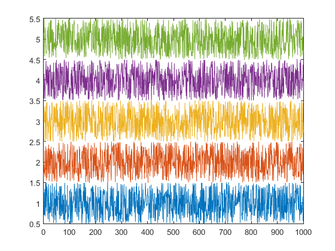
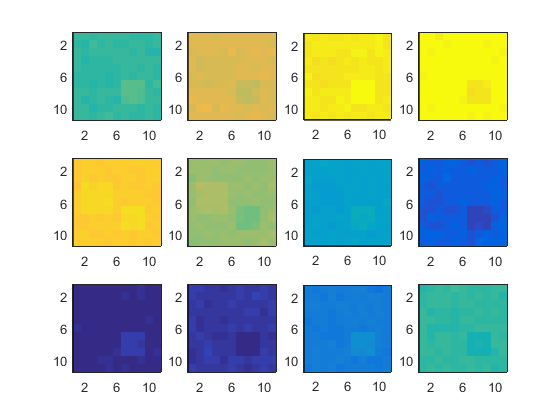
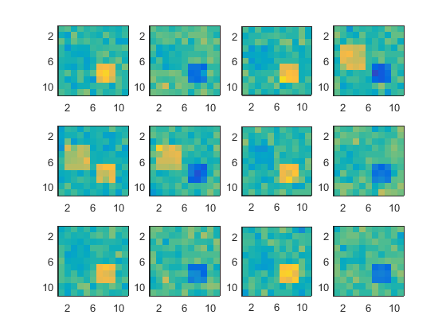
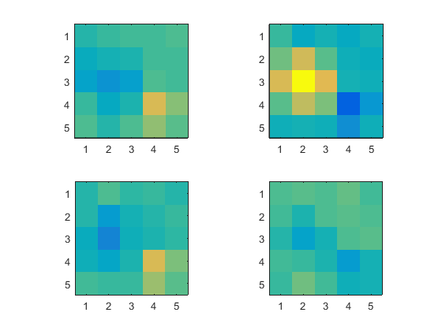
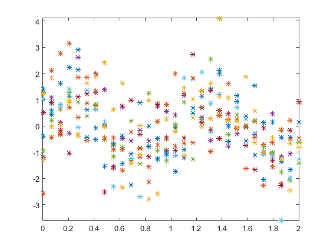
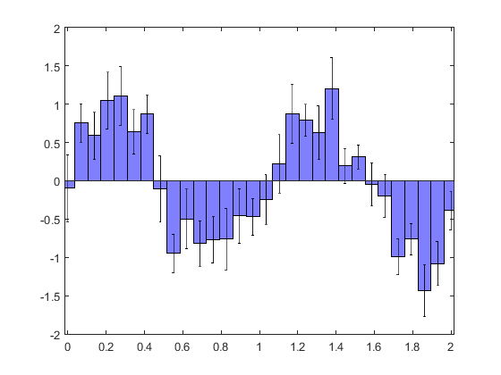
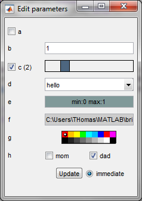
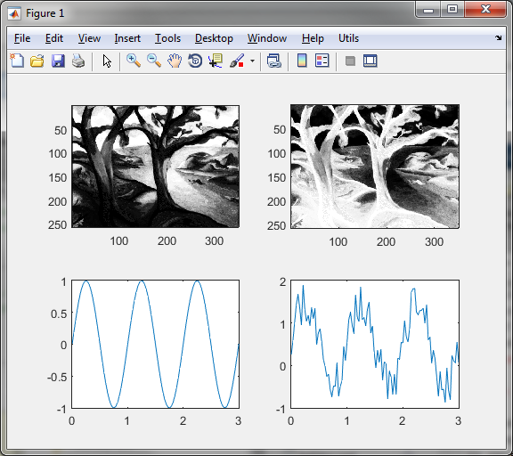
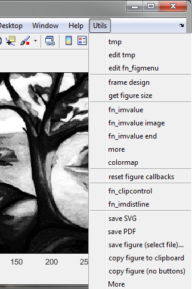

THE BRICK TOOLBOX
This toolbox, also called "fn" toolbox because most of its function names are starting by 'fn_', is a set of general-use function aimed at making Matlab programming faster and more convenient. This is a small tour of the whole toolbox. Please refer to the help of individual functions for more information.
Contents
Basic operations
fn_coerce is a shortcut for min(max(x,m),M)
Array manipulations
fn_add and fn_mult can add (or multiply) together two arrays which are not the same size, provided that for any dimension where the size differs, this size is 1 for one of the two arrays. The functions guess how to use repmat and make the two inputs the same size.
fn_add(10:10:40,(1:3)')
ans =
11 21 31 41
12 22 32 42
13 23 33 43
fn_mult(ans,[.01 .1 1 10])
ans =
0.1100 2.1000 31.0000 410.0000
0.1200 2.2000 32.0000 420.0000
0.1300 2.3000 33.0000 430.0000
This is very useful for many operations that one would like to perform column-wise or row-wise on an array. For example, if one wants to plot some data with some space between the lines.
x = rand(1000,5)-.5; plot(fn_add(x,1:5))
fn_normalize normalizes data in specific dimensions by subtracting (or dividing by) the average in those dimensions. In the following example, a 3D data (space x space x time) is first normalized temporally by dividing by an average frame, then by subtracting an average time course.
For an illustration, let us generate a example data, made of a reference image, which is perturbated by some relevant signals specific to some pixels, a unrelevant signal common to all pixels, and additional white noise.
nx = 11; ny = 11; nt = 12;
[x y] = ndgrid(-5:5,-5:5);
t = linspace(0,1,12);
reference = 1+exp(-(x.^2+y.^2)/3^2);
signal1 = 1e-2*[0 0 0 1 1 1 0 0 0 0 0 0];
map1 = zeros(nx,ny); map1(2:5,4:7) = 1;
signal2 = 1e-2*[1 -1 1 -1 1 -1 1 -1 1 -1 1 -1];
map2 = zeros(nx,ny); map2(7:9,7:9) = 1;
relevantsignals = fn_mult(map1,shiftdim(signal1,-1)) ...
+ fn_mult(map2,shiftdim(signal2,-1));
globalsignal = 1e-1*sin(2*pi*t);
globalsignal = shiftdim(globalsignal,-1);
allsignals = fn_add(relevantsignals,globalsignal);
noise = 2e-3*randn(nx,ny,nt);
data = fn_mult(reference,1+allsignals) + noise;
We can only guess the global signal in the raw data.
for k=1:nt, subplot(3,4,k), imagesc(data(:,:,k)',[1 2]), axis image, end

We use fn_normalize to divide by the average frame: the resulting display is still dominated by the global signal.
data = fn_normalize(data,3,'/'); for k=1:nt, subplot(3,4,k), imagesc(data(:,:,k)',[.9 1.1]), axis image, end
We use fn_normalize to subtract the average time courses: the relevant signals can now be observed.
data = fn_normalize(data,[1 2],'-'); for k=1:nt, subplot(3,4,k), imagesc(data(:,:,k)',[-.015 .015]), axis image, end
Note that the two operations could have been done at once, by doing
data = fn_normalize(data,{3 [1 2]},{'/' '-'});
fn_bin can be used to bin the data above, using spatial bins of size 2x2, and temporal bins of time 3.
databin = fn_bin(data,[2 2 3]); for k=1:4, subplot(2,2,k), imagesc(databin(:,:,k)',[-.006 .006]), axis image, end
Programming
fn_flags is a convenient function to check which flags are provided to a function through the varargin variable.
Suppose we have a function to which we can pass the flags 'bin', 'txt', 'image' and 'repeat', and the user passed only the flags 'bin' and 'image'.
varargin = {'bin' 'image'};
A quick way to check which flags were passed is:
[dobin dotxt doimage dorepeat] = fn_flags('bin','txt','image','repeat',varargin)
dobin =
1
dotxt =
0
doimage =
1
dorepeat =
0
fn_switch simplifies the writing of code which would necessit a if or a switch block.
Instead of
if x==0 y = 0; else y = 1/x; end
use
y = fn_switch(x==0,0,1/x);
And instead of
switch x case 'dog' y = 'cat' case 'yellow' y = 'blue' otherwise y = 'void' end
use
y = fn_switch(x,'dog','cat','yellow','blue','void');
Graphic functions
fn_errorbar plots functions +/- error level
Let us create some data: 10 noisy versions of the same sinusoide.
clf nt = 30; nexp = 10; t = linspace(0,2,nt); signal = sin(2*pi*t)'; data = fn_add(signal,randn(nt,nexp)); plot(t,data,'*'), axis tight
We can compute the average time course and the estimated error, and display the estimation result with fn_errorbar.
avg = mean(data,2);
err = std(data,0,2)/sqrt(nexp);
fn_errorbar(t,avg,err,'*')

Note that fn_errorbar can also compute by himself average and standard error, and offers also the 'bar' and 'patch' display options.
fn_errorbar(t,data,'bar','facecolor',[.5 .5 1])
GUI basic tools
fn_buttonmotion executes a task while the mouse is moving, and until the mouse button is released. The example below displays the pointer position in the figure whenever the mouse is pressed and moved.
figure(1), clf ht = uicontrol('style','text','backgroundcolor','y'); fun = @()set(ht,'string',num2str(get(1,'CurrentPoint'))); set(1,'buttondownfcn',@(u,e)fn_buttonmotion(fun,'doup'))
(execute)
GUI elaborate tools
fn_control transforms a structure s into a fn_control object X based on s and displays controls in a figure or a uipanel. The control actions are to modify the values in X, and inversely, modifying the values in X changes the control displays. Below is a simple usage example. See fn_movie function for a more elaborate usage.
s = struct('a',false,'b',1,'c',2,'d','hello','e',[0 1],'f',pwd,'g','red','h',[0 1]); spec = struct('c','xslider 0 10 1','d',{{'hello','yo'}},'e','clip','f','dir','g','color','h',{{'multcheck' 'mom' 'dad'}}); myfun = @disp; fn_control(s,spec,myfun);
(execute)

GUI programs
fn_imvalue, when executed, automatically links together the image and plot displays (existing one, and any one which will be created later), so that one can zoom in, zoom out, select a point in an image and get its value, and this simultaneously in all the axes containing data of the same dimensions. Try the following lines to get an idea.
fn_imvalue image figure(1), clf, colormap gray load trees subplot(221), imagesc(X) subplot(222), imagesc(-X) nt = 100; t = linspace(0,3,nt); signal = sin(2*pi*t); subplot(223), plot(t,signal) subplot(224), plot(t,signal+rand(1,nt))
(execute)

fn_figmenu creates a new menu in all figures opened, and in all figures which are going to be created later, which offers a set of actions. Try it!

Miscellaneous
fn_email allows to send emails from Matlab without leaving the Command window. It can send figures (saved in both the PNG and EPS formats), m-files or any file located on the path, and of course text. Just try it!